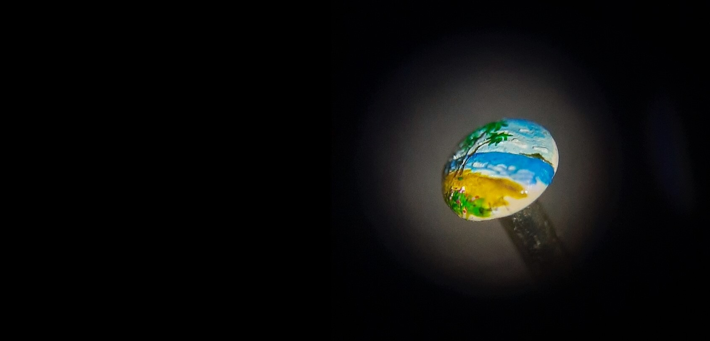
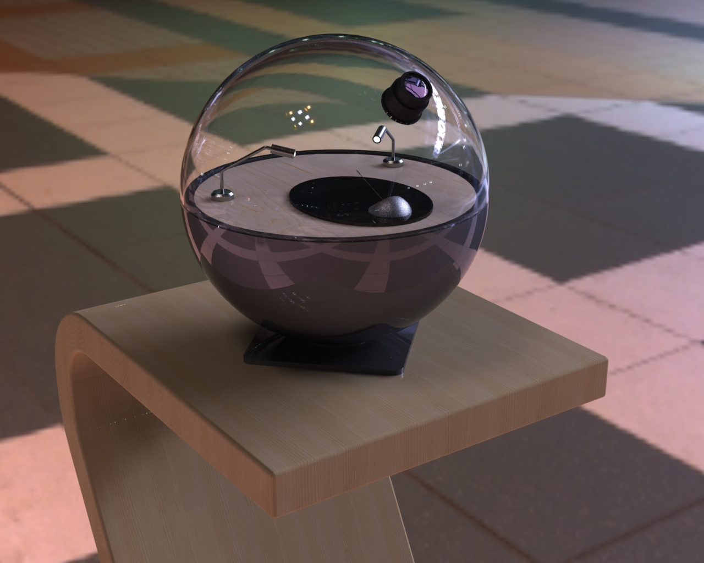
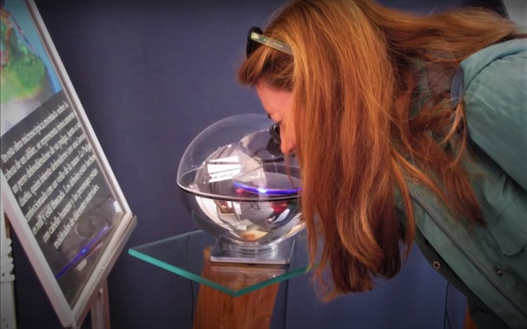

Think of the great artworks that have been made in history and what makes them unique!.
MicroArt website aims to present great works of art with the singularity of being the smallest ever created in the world; in fact, they are so small that if we don't see them we don't believe it.
The Webpage presents the artist “Polo Jerez” with its technique, tools, videos presentation and his art works, made with his own hands.
Can you imagine a picture painted in a single grain of sugar?, Possible?, You have to see it!.
The astonishment, the interesting and unique is guaranteed!
micro
ART
from Polo Jerez



When we hear the word "art", great sculptures, paintings by famous artists, and many times even works of art that we cannot understand or find their essence or meaning come to mind.
Seems much of art is reserved only for those who studied art and can understand what the artist wants to convey, the microscopic works of Polo Jerez can be understood, appreciated, and enjoyed with the naked eye and at first contact.
Well, not so naked eye! They are so small that they can only be seen clearly through powerful magnifying glasses focusing on the work.
It is not necessary to understand art to enjoy and be amazed by the works, but it is a bit hard to believe and many people come to wonder if it is not some optical illusion or trick.
For that same reason is why the works are presented in transparent capsules where you can glimpse a little with the naked eye to be able to compare and verify that the works are really there.
People think about
Astonishment
Disbelieve
Worth it
More than 90% of all those who attended an exhibition agree that it was worth it and recommend seeing and enjoying seeing them with their own eyes through the magnifying glass.
See it in person
Be more amazed
If you're interested in seeing an exhibit in person to enjoy and marvel at, check out the exhibit schedule below.
check calendar
